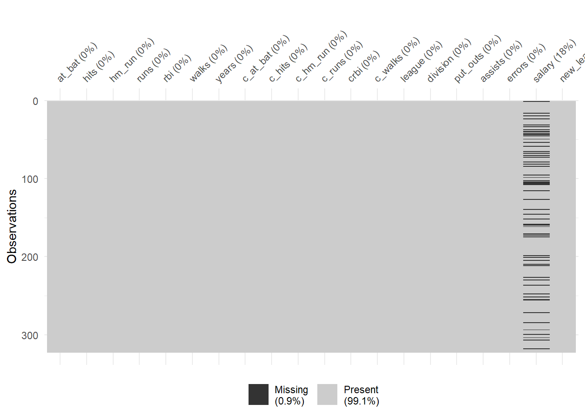
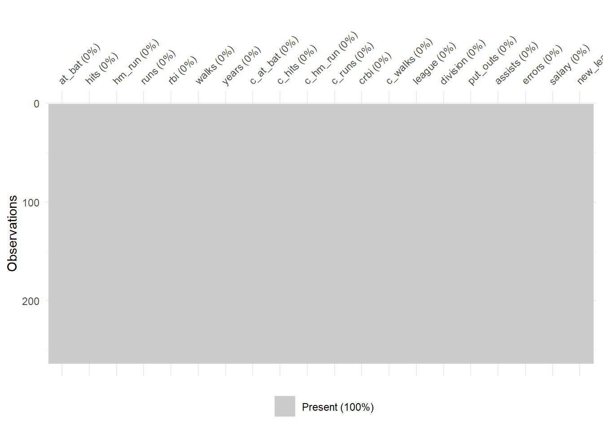
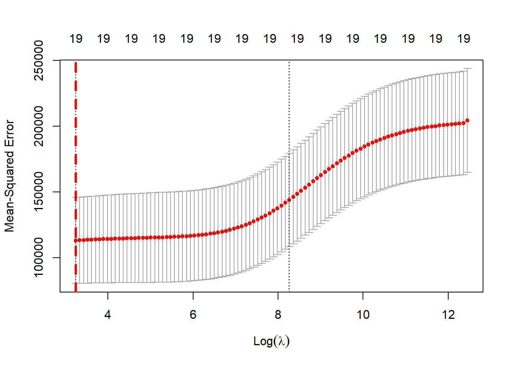
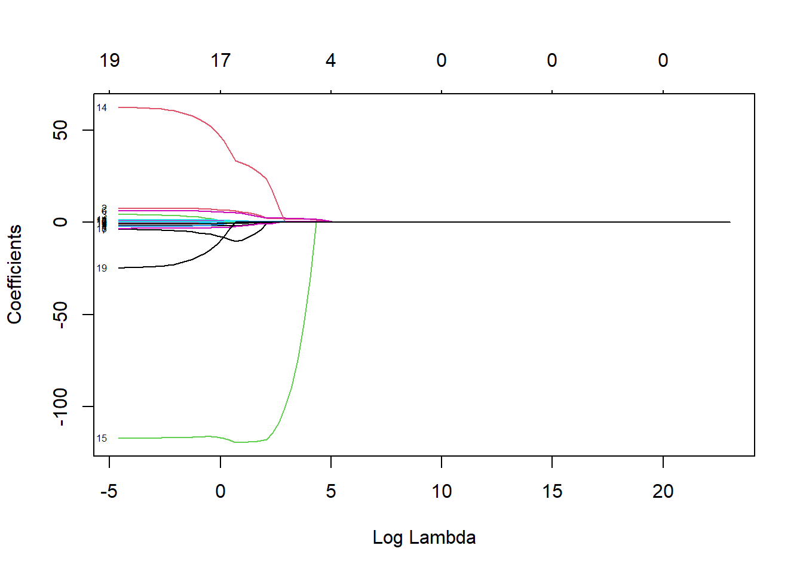
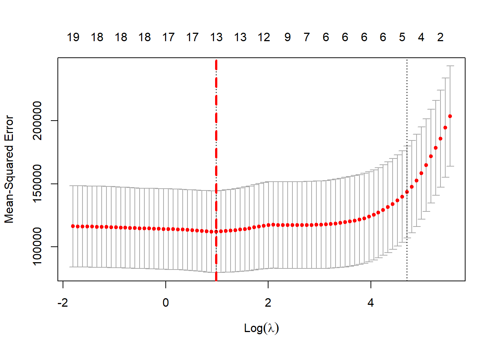
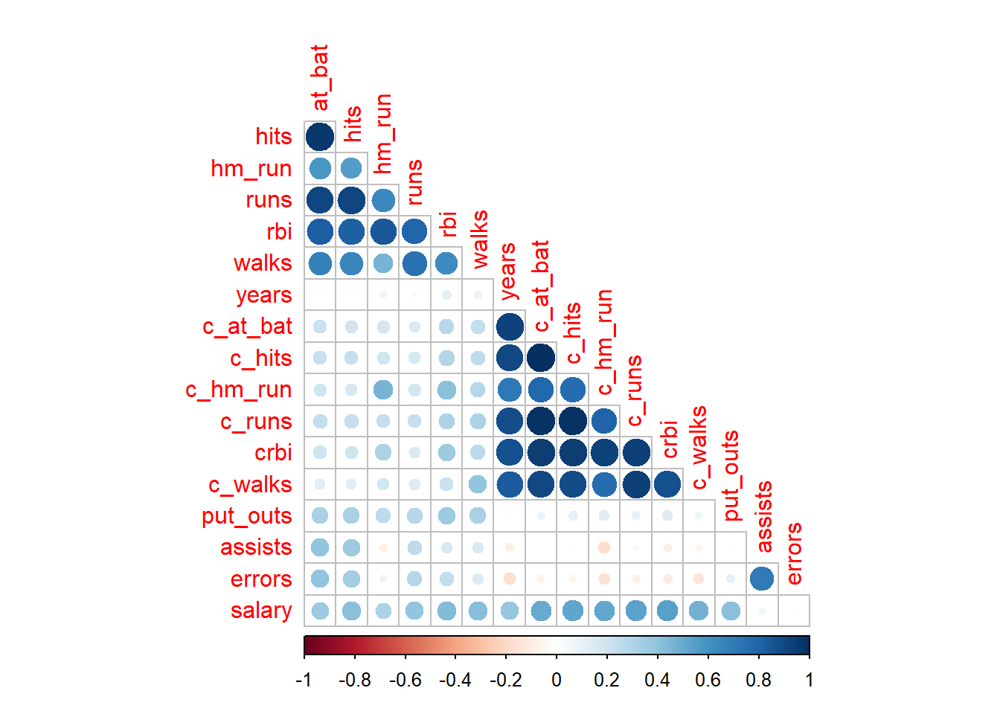
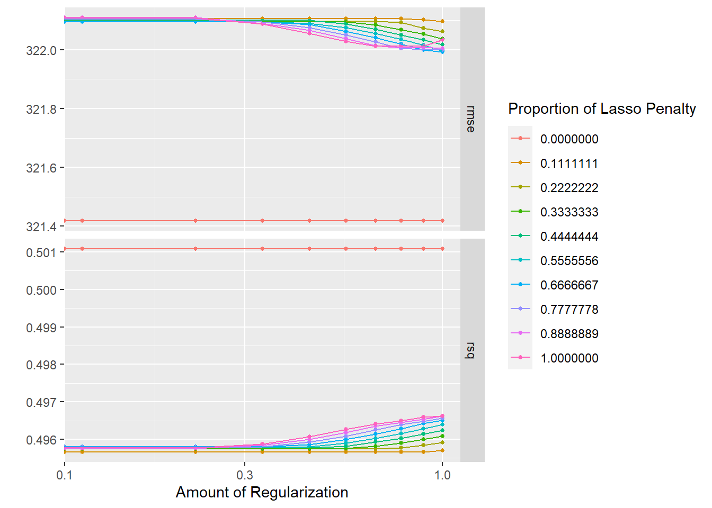

library(tidymodels)
library(ISLR) # load Major League Baseball Data from the 1986 and 1987 season
library(ISLR2)
library(tidyverse)
library(glmnet)
library(modeldata)
library(ggthemes)
library(janitor) # for naming conventions
library(naniar) # to assess missing data patterns
library(corrplot) # for a correlation plot
library(themis) # for upsampling
library(dplyr)
library(tidyr)
tidymodels_prefer()Vignette - Regression Shrinkage Methods
Abstract
This project explores the application of regularization techniques, specifically Ridge and Lasso regression, to predict Major League Baseball (MLB) player salaries based on various player statistics from the 1986 and 1987 seasons. Using the Hitters dataset, the study investigates the impact of Ridge and Lasso regression in handling multicollinearity and variable selection. The process involves data exploration, tidying, and the implementation of both Ridge and Lasso regression models. The project further delves into the integration of Principal Component Analysis (PCA) to address collinearity in predictor variables. Finally, an Elastic Net regression model is employed, combining Lasso and Ridge penalties. The hyperparameter tuning process, model selection, and the evaluation of the chosen model’s performance are also discussed. This comprehensive analysis provides insights into the effectiveness of different regularization techniques in statistical modeling.
Introducing Shrinkage Method
Ridge Regression
The purpose of ridge regression is to estimate the parameter \(\beta\) in the linear model.
\[\begin{align*} y = X\beta + \varepsilon, \quad \varepsilon \sim \mathcal(0, \sigma^2 I_n) \end{align*}\]
where X is \(N\times(p+1)\) real matrix with full column rank (rank = p + 1), and the first column a column of 1’s
Ridge regression:
\[\begin{align*} \hat{\beta}^{ridge} = \arg\min_{\beta} \left\{ \|y - X\beta\|_2^2 + \lambda \|\beta\|_2^2 \right\} \end{align*}\]
where:
\[\begin{align*} \hat{\beta}^{ridge} & : \text{Ridge regression coefficient estimates} \\ \beta & : \text{Regression coefficient vector} \\ X & : \text{Design matrix} \\ y & : \text{Response variable vector} \\ \lambda & : \text{Ridge regularization parameter} \\ \| \cdot \|_2 & : \text{L2 norm (Euclidean norm)} \end{align*}\]
which can also be written as:
\[\begin{align*} \hat{\beta}^{ridge} = \arg\min_{\beta} \left\{ \sum_{i=1}^{N}(y_i - \beta_0 - \sum_{j=1}^{p}x_{ij}\beta_j)^2 + \lambda(\sum_{j=1}^{p}\beta_{j}^2) \right\} \end{align*}\]
this is equivalent to finding:
\[\begin{align*} \hat{\beta}^{ridge} = \arg\min_{\beta} \left\{ \sum_{i=1}^{N}(y_i - \beta_0 - \sum_{j=1}^{p}x_{ij}\beta_j)^2 \right\} \quad subject \space to \quad \sum_{j=1}^{p}\beta_{j}^2 \leq t^2 \end{align*}\]
There exist an 1 to 1 correspondence between \(\lambda\) and t in above formulation.
Found that \(\sum_{i=1}^{N}(y_i - \beta_0 - \sum_{j=1}^{p}x_{ij}\beta_j)^2\) is the sum square residual (RSS), \(\lambda\) is the penalty parameter. The L2 regularization term is added to the ordinary least squares (OLS) objective function to prevent overfitting and to handle multicollinearity among the predictor variables. No penalty for the intercept \(\beta_0\).
\[\begin{align*} \lambda \geq 0 \end{align*}\]
if \(\lambda = 0\), then the \(\hat{\beta}^{ridge}\) will be ordinary least squares (OLS).
if \(\lambda \to \infty\), the penalty parameter will shrink all coefficient estimates closer to zero vector. (except intercept \(\beta_0\))
If the columns of X are each centered, and where there is no intercept, then the ridge estimate of \(\beta\) in model \(y = X\beta + \varepsilon\) minimizes a penalized least squares criterion.
\[\begin{align*} RSS(\lambda) = (y - X\beta)^T(y - X\beta) + \lambda \beta^T \beta \end{align*}\]
\[\begin{align*} \hat{\beta}^{ridge} = (X^T X + \lambda I)^{-1} X^T Y \end{align*}\]
which is a linear function of Y, therefore this estimator is a linear estimator.

In the picture above, p = 2 (2 parameters, not including the intercept). The \(\hat{\beta}^{ridge}\) lies either on the boundary of the circle or interior to the circle.
As \(\lambda \to \infty\) (or \(t \to 0\)), \(\hat{\beta}^{ridge} \to 0\).
As \(\lambda \to 0\) (or \(t \to \infty\)), \(\hat{\beta}^{ridge} \to \hat{\beta}^{OLS}\).
Lasso Regression
Different from ridge regression, lasso regression is a L1 penalty approach. The purpose is also to estimate \(\beta\) in linear model. Notable, lasso also does variable selection.
Lasso regression:
\[\begin{align*} \hat{\beta}^{lasso} = \arg\min_{\beta} \left\{ \|y - X\beta\|_2^2 + \lambda \|\beta\|_1 \right\} \end{align*}\]
where:
\[\begin{align*} \hat{\beta}^{lasso} & : \text{Lasso regression coefficient estimates} \\ \beta & : \text{Regression coefficient vector} \\ X & : \text{Design matrix} \\ y & : \text{Response variable vector} \\ \lambda & : \text{Lasso regularization parameter} \\ \| \cdot \|_2 & : \text{L2 norm (Euclidean norm)} \\ \| \cdot \|_1 & : \text{L1 norm (Manhattan norm)} \end{align*}\]
which can also be written as:
\[\begin{align*} \hat{\beta}^{lasso} = \arg\min_{\beta} \left\{ \sum_{i=1}^{N}(y_i - \beta_0 - \sum_{j=1}^{p}x_{ij}\beta_j)^2 + \lambda(\sum_{j=1}^{p}|\beta_{j}|) \right\} \end{align*}\]
this is equivalent to finding:
\[\begin{align*} \hat{\beta}^{lasso} = \arg\min_{\beta} \left\{ \sum_{i=1}^{N}(y_i - \beta_0 - \sum_{j=1}^{p}x_{ij}\beta_j)^2 \right\} \quad subject \space to \quad \sum_{j=1}^{p}|\beta_{j}| \leq t^2 \end{align*}\]
There exist an 1 to 1 correspondence between \(\lambda\) and t in above formulation.
The different between ridge regression and lasso regression is that ridge regression never set parameter to 0, yet lasso regression does.
Regression: Baseball salaries
We’ll use the Hitters data set to illustrate a regression problem. Hitters is included in the ISLR package. Let’s take a look at the data:
Loading Packages
Our goal to predict baseball players’ Salary based on several different characteristics which are included in the data set, like their number of times at bat, number of hits, division, etc.
Exploring our data
The Hitters data set includes the Major League Baseball (MLB) Data from the 1986 and 1987 seasons. In this data frame, there are 322 observations (rows) of major league players with 20 variables (columns).
AtBat: The number of times a player at bat in 1986 season.Hits: The number of a player hits in 1986 season.HmRun: The number of Home runs in 1986 season.Runs: The number of runs in 1986 season.RBI: The number of runs batted in 1986 season.Walks: The number of walks in 1986 season.Years: The number of years the player stayed in the major leagues.CAtBat: The number of times at bat during career.CHits: The number of hits during career.CHmRun: The number of home runs during career.CRuns: The number of runs during career.CRBI: The number of runs batted in during career.CWalks: The number of walks during career.League: A factor with levels A and N indicating player’s league at the end of 1986.Division: A factor with levels E and W indicating player’s division at the end of 1986.PutOuts: The number of put outs in 1986 season.Assists: The number of assists in 1986 season.Errors: The number of errors in 1986 season.Salary: 1987 annual salary on opening day in thousands of dollars.NewLeague: A factor with levels A and N indicating player’s league at the beginning of 1987.
Tidying the Data
hitters <- as_tibble(Hitters)
head(hitters)# A tibble: 6 × 20
AtBat Hits HmRun Runs RBI Walks Years CAtBat CHits CHmRun CRuns CRBI
<int> <int> <int> <int> <int> <int> <int> <int> <int> <int> <int> <int>
1 293 66 1 30 29 14 1 293 66 1 30 29
2 315 81 7 24 38 39 14 3449 835 69 321 414
3 479 130 18 66 72 76 3 1624 457 63 224 266
4 496 141 20 65 78 37 11 5628 1575 225 828 838
5 321 87 10 39 42 30 2 396 101 12 48 46
6 594 169 4 74 51 35 11 4408 1133 19 501 336
# ℹ 8 more variables: CWalks <int>, League <fct>, Division <fct>,
# PutOuts <int>, Assists <int>, Errors <int>, Salary <dbl>, NewLeague <fct>hitters <- hitters %>%
clean_names()
head(hitters)# A tibble: 6 × 20
at_bat hits hm_run runs rbi walks years c_at_bat c_hits c_hm_run c_runs
<int> <int> <int> <int> <int> <int> <int> <int> <int> <int> <int>
1 293 66 1 30 29 14 1 293 66 1 30
2 315 81 7 24 38 39 14 3449 835 69 321
3 479 130 18 66 72 76 3 1624 457 63 224
4 496 141 20 65 78 37 11 5628 1575 225 828
5 321 87 10 39 42 30 2 396 101 12 48
6 594 169 4 74 51 35 11 4408 1133 19 501
# ℹ 9 more variables: crbi <int>, c_walks <int>, league <fct>, division <fct>,
# put_outs <int>, assists <int>, errors <int>, salary <dbl>, new_league <fct>Here we use the the clean_names() function, comparing before and after using this function, we would found that the column name have became at lot more neat (the column name of the dataset are likely to be transformed into lowercase, and the dots or space are replaced with underscores). Which shows that clean_names() is useful because it makes the column names more standardized and easier to work with.
set.seed(123)
hitters_split <- initial_split(hitters, strata = "salary", prop = 0.8)
hitters_train <- training(hitters_split) # training data set
hitters_test <- testing(hitters_split) # testing data set
# Create 10-fold cross-validation splits
hitters_fold <- vfold_cv(hitters_train, v = 10) Now visualizing the missingness within the data:
vis_miss(hitters)
Now, we found that there are missing data, we could use function na.omit() to remove the observation with missing value.
Hitters_clear <- na.omit(hitters)
vis_miss(Hitters_clear)
Perform Ridge & Lasso regression
Our goal to predict baseball players’ Salary using ridge regression and lasso regression based on several different characteristics which are included in the data set, like their number of times at bat, number of hits, division, etc.
# use to produce a matrix corresponding to the predictor variables.
x <- model.matrix(salary~., Hitters_clear)[,-1] # removing the intercept
y <- Hitters_clear$salary # response variable: the salary# Ridge Regression
grid <- 10^seq(10, -2, length = 100)
ridge_mod <- glmnet(x, y, alpha = 0, lambda = grid)By default, the glmnet() function performs ridge regression for an automatically selected range of \(\lambda\) values. However, here we have chosen to implement the function over a grid of values ranging from \(\lambda = 10^{10}\) to \(\lambda = 10^{-2}\), essentially covering the full range of scenarios from the null model (\(\lambda\) very large) containing only the intercept, to the least squares fit (\(\lambda\) = 0).
The variables in glmnet() function:
lambda: the range of lambda value
alpha: determining what type of model is fitting.
alpha = 1: showing the lasso regression model is fitting (the default value)
alpha = 0: showing the ridge regression model is fitting
ridge_mod$lambda[70] # displaying the 70th lambda value[1] 43.28761coef(ridge_mod)[,70] # displaying coefficients (Intercept) at_bat hits hm_run runs
54.97384215 -0.41480601 2.10530493 -1.34828331 1.13281252
rbi walks years c_at_bat c_hits
0.79219405 2.83508432 -6.85814163 0.00438123 0.11187771
c_hm_run c_runs crbi c_walks leagueN
0.64020753 0.23468562 0.22724180 -0.17405551 47.59278798
divisionW put_outs assists errors new_leagueN
-119.52546741 0.25369445 0.13095051 -3.38369142 -11.36670636 sum(coef(ridge_mod)[-1,70]^2) # Calculate L2 norm squared[1] 16756.11ridge_mod$lambda[60] #Display 60th lambda value[1] 705.4802coef(ridge_mod)[,60] # Display coefficients (Intercept) at_bat hits hm_run runs rbi
54.32519950 0.11211115 0.65622409 1.17980910 0.93769713 0.84718546
walks years c_at_bat c_hits c_hm_run c_runs
1.31987948 2.59640425 0.01083413 0.04674557 0.33777318 0.09355528
crbi c_walks leagueN divisionW put_outs assists
0.09780402 0.07189612 13.68370191 -54.65877750 0.11852289 0.01606037
errors new_leagueN
-0.70358655 8.61181213 sum(coef(ridge_mod)[-1,60]^2) # Calculate L2 norm squared[1] 3261.554Comparing 60th \(\lambda\) value and 70th \(\lambda\) value. We can observe that the L2 norm squared of the coefficients decreases when lambda value increases.
Here, we use predict() function:
# defined for glmnet output
pred <- predict(object = ridge_mod, newx = x)Employing cross-validation using the cv.glmnet() function to select the optimal tuning parameter.
Instead of arbitrarily selecting a value for \(\lambda\), a more robust approach involves employing cross-validation to systematically determine the optimal tuning parameter. This can be accomplished through the utilization of the built-in cross-validation function, cv.glmnet(). By default, the function conducts 10-fold cross-validation; however, this setting can be modified through the use of the appropriate function argument.
set.seed(123) # set seed.
cv.out.ridge <- cv.glmnet(x, y, alpha = 0)
plot(cv.out.ridge)
abline(v = log(cv.out.ridge$lambda.min), col="red", lwd=3, lty=2)
# getting the lambda with the least MSE
bestlam <- cv.out.ridge$lambda.min
bestlam[1] 25.52821log(bestlam) # where the red line is.[1] 3.239784out <- glmnet(x,y,alpha=0)
reg_coef <- predict(out,type="coefficients",s=bestlam)[1:20,]
reg_coef (Intercept) at_bat hits hm_run runs
8.112693e+01 -6.815959e-01 2.772312e+00 -1.365680e+00 1.014826e+00
rbi walks years c_at_bat c_hits
7.130224e-01 3.378558e+00 -9.066800e+00 -1.199478e-03 1.361029e-01
c_hm_run c_runs crbi c_walks leagueN
6.979958e-01 2.958896e-01 2.570711e-01 -2.789666e-01 5.321272e+01
divisionW put_outs assists errors new_leagueN
-1.228345e+02 2.638876e-01 1.698796e-01 -3.685645e+00 -1.810510e+01 The model resulting from ridge regression is deemed optimal. It is noteworthy that none of the coefficients within this model attain a value of zero. It is imperative to acknowledge that ridge regression does not inherently facilitate variable selection.
# Lasso Regression
grid <- 10^seq(10, -2, length = 100)
lasso.mod <- glmnet(x, y, alpha=1, lambda=grid) # alpha=1, showing lasso regression
plot(lasso.mod, xvar="lambda", label = TRUE)
Through the graph above, we can observe that as the x-axis (Log Lambda) goes right, which indicates that the value of \(\lambda\) increases, the coefficients gradually converge to zero. Some of the coefficient will be exactly zero, because lasso regression does variable selection.
set.seed(123) # set seed
cv.out.lasso <- cv.glmnet(x, y, alpha = 1)
plot(cv.out.lasso)
abline(v = log(cv.out.lasso$lambda.min), col="red", lwd=3, lty=2)
# getting the lambda with the least MSE
bestlam <- cv.out.lasso$lambda.min
bestlam[1] 2.674375log(bestlam) # where the red line is[1] 0.9837159out <- glmnet(x,y,alpha=1,lambda=grid)
lasso_coef <- predict(out,type="coefficients",s=bestlam)[1:20,]
lasso_coef (Intercept) at_bat hits hm_run runs rbi
123.6500045 -1.5549984 5.6819438 0.0000000 0.0000000 0.0000000
walks years c_at_bat c_hits c_hm_run c_runs
4.7413409 -9.4890186 0.0000000 0.0000000 0.5171481 0.6587402
crbi c_walks leagueN divisionW put_outs assists
0.3916899 -0.5305906 32.0825645 -119.2543259 0.2724837 0.1738553
errors new_leagueN
-2.0485506 0.0000000 predict(out,type="coefficients",s=0)[1:20,] # compare when lambda = 0 (Intercept) at_bat hits hm_run runs rbi
164.0049755 -1.9947754 7.5106736 4.1392300 -2.3324269 -0.9699386
walks years c_at_bat c_hits c_hm_run c_runs
6.2401288 -3.9683382 -0.1626764 0.1287533 -0.1022970 1.4310700
crbi c_walks leagueN divisionW put_outs assists
0.7727455 -0.8140598 62.3363000 -116.9873548 0.2823420 0.3680155
errors new_leagueN
-3.3569606 -24.7353600 Fitting the Model
hitters_train %>%
select(is.numeric) %>% # selecting numeric columns
cor(use = "pairwise.complete.obs") %>% # handling missing data in Salary
corrplot(type = "lower", diag = FALSE) # printing lower half of matrix
Through the visualization of the correlation matrix depicted above, robust positive linear correlations show among variables such as years, c_hits, c_runs, crbi, and c_walks. Similarly, substantial positive correlations are observed among at_bat, hits, runs, rbi, and walks. To mitigate the collinearity evident in these relationships, the introduction of the step_pca() procedure will be considered.
hitters_recipe <- recipe(salary ~ . , data = hitters_train) %>%
step_dummy(all_nominal_predictors()) %>%
step_normalize(all_predictors()) %>%
step_impute_linear(salary,
impute_with = imp_vars(c_hits, c_runs, crbi, c_walks,
c_at_bat), skip = TRUE) %>%
step_pca(hits, hm_run, runs, rbi, walks,
num_comp = 1, prefix = "first_pc") %>%
step_pca(years, c_hits, c_runs, crbi, c_walks, c_at_bat,
num_comp = 1, prefix = "second_pc")
prep(hitters_recipe) %>% bake(new_data = hitters_train)# A tibble: 255 × 11
at_bat c_hm_run put_outs assists errors salary league_N division_W
<dbl> <dbl> <dbl> <dbl> <dbl> <dbl> <dbl> <dbl>
1 -0.518 -0.795 -0.605 1.23 0.122 100 -0.912 0.979
2 -0.360 -0.725 -0.527 1.28 1.64 75 1.09 0.979
3 -1.20 -0.737 -0.672 0.480 1.19 175 -0.912 0.979
4 -1.60 -0.516 -0.320 -0.619 -0.944 135 1.09 0.979
5 0.208 -0.609 -0.0449 -0.711 -0.487 100 1.09 -1.02
6 0.290 -0.760 0.240 -0.619 -0.944 115 -0.912 0.979
7 -0.707 -0.737 0.525 -0.356 -0.335 90 1.09 0.979
8 -1.26 -0.749 0.117 -0.569 -0.487 67.5 -0.912 -1.02
9 -1.04 -0.260 -0.668 -0.179 -0.487 NA 1.09 0.979
10 -1.03 -0.423 0.0501 -0.597 -1.10 180 -0.912 -1.02
# ℹ 245 more rows
# ℹ 3 more variables: new_league_N <dbl>, first_pc1 <dbl>, second_pc1 <dbl>First, we make sure to normalize all the predictors, which is usually a good idea when doing PCA, so that they’re on a level playing field. After that, we pick out two principal components. The first one captures all the shared info from the first bunch of five correlated predictors, and the second one does the same for the second bunch.
Elastic Net Regression
Elastic Net regression is a regularization technique that combines both L1 (Lasso) and L2 (Ridge) regularization penalties in the linear regression model. In other words, Elastic Net incorporates both the absolute values of the coefficients (L1 penalty) and the squared values of the coefficients (L2 penalty) in the optimization objective. The mixture argument specifies the amount of different types of regularization; mixture = 0 specifies only ridge regularization and mixture = 1 specifies only lasso regularization. Setting mixture to a value between 0 and 1, which results in a mixture of L1 and L2 regularization, or what is often called an “elastic net.”
# Define the model specifications
enet_spec_hitters <- linear_reg(penalty = tune(), mixture = tune()) %>%
set_engine("glmnet") %>%
set_mode("regression")
enet_spec_hittersLinear Regression Model Specification (regression)
Main Arguments:
penalty = tune()
mixture = tune()
Computational engine: glmnet # Set up the parameter grids
param_grid_enet <- grid_regular(penalty(range = c(0, 1), trans = identity_trans()) ,
mixture(range = c(0, 1)), levels = 10)
# Set up the workflows
workflow_enet <- workflow() %>%
add_recipe(hitters_recipe) %>%
add_model(enet_spec_hitters)By using the function grid_regular(), which creates a grid of evenly spaced parameter values. The next step, using the penalty() function to identify the parameter and define the range within the grid we intend to explore. Using trans = identity_trans() to tell R to use the exact values that we specified, from 0 to 1. Setting the levels to 10.
Hyperparameter Tuning
tune_res_hitters <- tune_grid(
workflow_enet,
resamples = hitters_fold,
grid = param_grid_enet
)autoplot() creates a great visualization of the information about each metric across each fold for us:
autoplot(tune_res_hitters)Warning: Transformation introduced infinite values in continuous x-axis
Transformation introduced infinite values in continuous x-axis
Observing the plot above, we notice that the scale of the y-axis for both metrics is relatively small. This indicates that the resulting performance doesn’t really vary drastically across any of the models we’ve fit. The amount of regularization, on the x-axis, is the penalty hyperparameter, which covers the range of values we specified (zero to one), and the values of mixture are represented by the different-colored lines.
Overall, the models with zero percentage of lasso penalty, or the ridge regression models, do better, as indicated by the red line being consistently higher (or lower) than the others. This implies that it yields better performance to avoid reducing predictors all the way down to zero, as can happen in the case of lasso regression. Models with some non-zero proportion of lasso start to do slightly better as the penalty value increases, although still their performance is not near the level of ridge regression.
Model Selection
The “best” values of these can be selected using select_best(), or using any variation on that function like select_by_one_std_error(), etc. These functions require you to specify a metric that it should use to select, in this case we’ll use the rmse.
(enet_hitters_metrics <- collect_metrics(tune_res_hitters))# A tibble: 200 × 8
penalty mixture .metric .estimator mean n std_err .config
<dbl> <dbl> <chr> <chr> <dbl> <int> <dbl> <chr>
1 0 0 rmse standard 321. 10 31.9 Preprocessor1_Model…
2 0 0 rsq standard 0.501 10 0.0577 Preprocessor1_Model…
3 0.111 0 rmse standard 321. 10 31.9 Preprocessor1_Model…
4 0.111 0 rsq standard 0.501 10 0.0577 Preprocessor1_Model…
5 0.222 0 rmse standard 321. 10 31.9 Preprocessor1_Model…
6 0.222 0 rsq standard 0.501 10 0.0577 Preprocessor1_Model…
7 0.333 0 rmse standard 321. 10 31.9 Preprocessor1_Model…
8 0.333 0 rsq standard 0.501 10 0.0577 Preprocessor1_Model…
9 0.444 0 rmse standard 321. 10 31.9 Preprocessor1_Model…
10 0.444 0 rsq standard 0.501 10 0.0577 Preprocessor1_Model…
# ℹ 190 more rowsshow_best(tune_res_hitters, metric = "rmse")# A tibble: 5 × 8
penalty mixture .metric .estimator mean n std_err .config
<dbl> <dbl> <chr> <chr> <dbl> <int> <dbl> <chr>
1 0 0 rmse standard 321. 10 31.9 Preprocessor1_Model001
2 0.111 0 rmse standard 321. 10 31.9 Preprocessor1_Model002
3 0.222 0 rmse standard 321. 10 31.9 Preprocessor1_Model003
4 0.333 0 rmse standard 321. 10 31.9 Preprocessor1_Model004
5 0.444 0 rmse standard 321. 10 31.9 Preprocessor1_Model005(best_enet <- select_by_one_std_err(tune_res_hitters, desc(penalty), desc(mixture),metric = "rmse"))# A tibble: 1 × 10
penalty mixture .metric .estimator mean n std_err .config .best .bound
<dbl> <dbl> <chr> <chr> <dbl> <int> <dbl> <chr> <dbl> <dbl>
1 1 1 rmse standard 322. 10 31.7 Preproces… 321. 353.Fit chosed model
These values of penalty and mixture can then be used with finalize_workflow() to update/finalize the recipes by replacing tune() with the value of best_enet. Now, these best models should be fit again, this time using the whole training data set.
# Finalize enet model
final_enet_wf <- finalize_workflow(workflow_enet, best_enet)
final_enet_wf══ Workflow ════════════════════════════════════════════════════════════════════
Preprocessor: Recipe
Model: linear_reg()
── Preprocessor ────────────────────────────────────────────────────────────────
5 Recipe Steps
• step_dummy()
• step_normalize()
• step_impute_linear()
• step_pca()
• step_pca()
── Model ───────────────────────────────────────────────────────────────────────
Linear Regression Model Specification (regression)
Main Arguments:
penalty = 1
mixture = 1
Computational engine: glmnet final_enet_fit <- fit(final_enet_wf, hitters_train)
# final_enet_fitThese final models can now be applied on our testing data sets to assess their abilities to generalize to brand new data:
# enet model
augment(final_enet_fit, new_data = hitters_test) %>%
rmse(truth = salary, estimate = .pred)# A tibble: 1 × 3
.metric .estimator .estimate
<chr> <chr> <dbl>
1 rmse standard 363.Learn about Shrinkage Methods
https://www.youtube.com/watch?v=lLlG5xkyqIA
https://busigence.com/blog/shrinkage-methods-in-linear-regression/
Learn about Elastic Net Regression
https://www.youtube.com/watch?v=1dKRdX9bfIo
https://scikit-learn.org/stable/modules/generated/sklearn.linear_model.ElasticNet.html